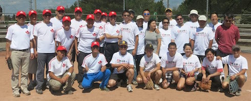
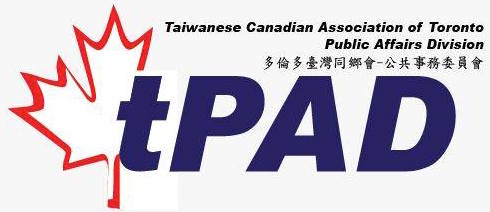

Formosan Cup Division (tFCD)
The tournament is organized by the Taiwanese Canadian Association of Toronto (TCAT). The storied existence of the Formosan Cup dates back to 1974 with the inaugural Formosan Cup in Toronto with a handful of teams from Toronto, Waterloo, Syracuse, Buffalo, New York, Rochester, Detroit and East Lansing. It began as an exclusively Taiwanese Men’s tournament and this annual tradition kept has begun to flourish in recent years. Today, the Formosan Cup is entering into its 40th year and is recognized as one of the premier softball events in all of North America. Not only has the Formosan Cup become a “can’t miss” event on the Toronto softball calendar, it has also become an integral family event with community leaders attending as well as other non-softball events being held throughout the weekend. Some of the extra-curricular events include the Sunday morning church service from all Taiwanese churches, the Kids Event, The TECO vs. TCAT friendly and the Appreciation Night Gala. The tournament is usually held during the Civic Holiday weekend at Milliken Mills Community Park in the town of Markham, which is regarded as Markham’s finest softball facilities. The growth of the tournament has stretched past the Taiwanese community and extended to all Asian ethnicities and the number of participants have continually grown year over year with players ranging from all ages and skill levels.
Public Affair Division (tPAD)
In November of 2009, a collective effort was spearheaded by a group consisting of Kirk Lin, David Lin, Harry Tsai, Jim Tscheng, Daniel Liao, and Edward Chung to create a new segment within our venerable organization to focus much-needed attention towards the active contribution and participation in our Canadian politics at all three levels of government in an attempt to become even more mainstream and maybe attract the second and third generation of TCAT members to take a greater role in our country's matters. After a few informal meetings which yielded many great ideas, Jim Tscheng gave a presentation to the 2009-2010 TCAT board of director members, which then voted in favour of activating this new subgroup. The newly-formed Public Affairs Division ("tPAD") of the TCAT has the objective to educate our community in the many aspects of our country's democratic political process including: how our government works, the ramifications of our monetary donations, the support of leaders who are pro-Taiwan and perhaps even the fielding of a local Taiwanese-Canadian political candidate to one-day win a seat at either the municipal, provincial or federal level of government, amongst many others.
Talent Division (tTalent)
These talented people all originated from Taiwan and have immigrated to Canada over the years. They have gathered together to form a team to represent Taiwan to perform as proud Taiwanese-Canadian to show the Taiwanese spirit. With numerous on-stage performance, they would proof to the world that Taiwanese got talent in Canada as well.
Choir
Hip-hop Dance
Band